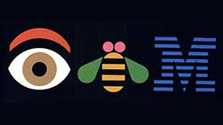
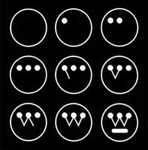
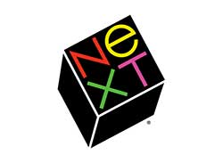

“Don't try to be original. Just try to be good.”
-Paul Rand
Paul Rand is one of the most iconic American graphic designers of the twentieth century. He is best known for designing corporate identities and his work is featured in many museums in the United States, Europe and Japan.
Peretz Rosenbaum was born into a Jewish family on 15 August 1914 in Brooklyn, New York. He discovered his love for art and design very early in life and started out by painting signs for his father's grocery store as well as for school events. His father did not however believe that art would be a lucrative career for his son and therefore insisted that Peretz attend Harren High School in Manhattan. As well as attending the local High School, Peretz took night classes in art at schools such as the Pratt Institute, the Parsons School of Design and the Art Students League. These additional lessons did not however inspire him with the result that his own art style and technique became very much self-taught based on the works of Cassandre and Moholy-Nagy.
While Peretz was still at school he obtained a part time job creating stock images which were supplied to newspapers and magazines. He was greatly influenced by the German advertising style Sachplakat and also liked the work of Gustav Jensen. It was around this time that he decided to change his name to disguise his Jewish origins. Peretz chose the name Paul Rand, which he believed sounded more American, and this then became the brand identity for all his future designs. Rand rapidly became famous for his magazine cover designs which he often produced free of charge in exchange for full artistic freedom. One of his most famous designs was the December 1940 cover for Direction magazine which depicted barbed wire and a crucifix.
Rand had a talent for bringing photographs to life and making them appear dynamic. He became the Art Director at Esquire when he was only twenty-three and spent thirteen years as creative director of a New York advertising agency. His designs were known for their concise expression, their bright and cheerful colours and their powerful and solid design sense. During his career he became a consultant to IBM, Cummins Engine Company and Westinghouse Electric Corporation. He wrote several books on design and went on to teach design at Yale University in Connecticut when he was in his forties. For the last two decades of his career he taught in the Yale Summer Program in Brissage, Switzerland until his death in 1996.
Paul Rand was greatly influenced by modernist philosophy and he admired artists from Paul Cezanne to Jan Tschichold. He was especially fond of eastern philosophy and a lot of his designs were Japanese orientated. He attempted to connect imaginative ideas and significant applications in graphic design.
“From Impressionism to Pop Art, the commonplace and even the comic strip have become ingredients for the artist's caldron. What Cezanne did with apples, Picasso with guitars, Leger with machines, Schwitters with rubbish, and Duchamp with urinals makes it clear that revelation does not depend upon grandiose concepts. The problem of the artist is to defamiliarise the ordinary.”
-A Designer's Art by Paul Rand
This idea of “defamiliarising the ordinary” played an important part in Rand's designs. He enjoyed the challenge of creating lively and original packaging for everyday items such as light bulbs for Westinghouse.
Paul Rand is probably best known for designing corporate identities, many of which are still in use today, such as IBM, ABC, Cummins Engine, Westinghouse and UPS. His most famous corporate identity was probably his IBM logo in 1956 which he subsequently modified a couple of times before ending up with the Eye-Bee-M logo. A fellow designer, Mark Favermann, remarked that this,
"Was not just an identity but a basic design philosophy that permeated corporate consciousness and public awareness."
Rand continued to produce important corporate identities into the 80's and 90's. One of his most renowned later pieces of work was the corporate identity for NeXT Computer. Rand used a simplistic black box and broke the company name into two lines producing a visual harmony. His client, Steve Jobs, was delighted with this work and labelled Rand,
“The greatest living graphic designer”
-Steve Jobs
Yusaku Kamekura first visited Paul Rand at his home in 1954. He tells us that Paul rand was already well known at that time but after that meeting he went on to produce a succession of exceptional works and to win nearly every prize as a result. Kamekura comments on the abundance of lyrical beauty in Rand's works and by their diverse expressive methods, which were matched to their times.
“In my mind, the word that probably fit Paul Rand best is ‘genius’”.
-Yusaku Kamekura
Jessica Helfand was one of Paul Rand's students at Yale University. Helfand tells us that she spent hours talking about life, ideas and reading with Paul Rand. Rand would say,
“You will learn most things by looking, but reading gives understanding. Reading will make you free.”
Helfand believes that this more than anything taught her how to really look at design.
“It was this, more than anything, I learned from him: how to really look - deeply, ruthlessly, penetratingly - and see.”
-Jessica Helfand
Phillip Burton describes Paul Rand as ‘compassionate’ and ‘inspiring’. He tells us that when Rand worked with students he poured his heart and soul into it.
Steff Giessbuhler was a teacher of Graphic Design at the Philadelphia College of Art. The local advertising community questioned the teaching methodology of the faculty and threatened to withhold their financial support of the college. Paul Rand was one of the designers selected to investigate the program. Giessbuhler describes Rand as ‘very tough’, accusing him of being a pop artist. However Geissbuhler goes on to say that he liked and respected Paul Rand and that he was an ‘Untouchable’ and was treated as a king by his clients.
“People were afraid of him. He never compromised; he never wavered. He showed one solution - take it or leave it.”
-Steff Geissbuhler
Gordon Salchow was one of Rand's students in 1963. He describes Rand as reliably direct, honest and insightful. He goes on to say that the brevity of Rand's comments were poetically complex. Salchow states that he was privileged to have been Rand's student and was proud to have known him.
“He was, without a doubt, a rare intellectual and creative genius whose spectacular contributions to our human legacy add inspiration and quality to everyone's lives.”
-Gordon Salchow
Armin Hofmann was a teacher at Yale University and first met Paul Rand in 1956. He tells us that what followed was thirty years of continuing encounters in connection to their teaching responsibilities. Hofmann says that they had a strong professional and educational connection.
“The collaboration that connected us both as human beings and as professionals remains one of the most treasured experiences for me as a teacher and as a designer.”
-Armin Hofmann
“A logo does not sell (directly), it identifies.”
-Paul Rand
During his career Paul Rand was hired as a consultant by several different companies and a lot of the work he created for them has become very famous.
One of his more notable pieces of work was for IBM. Rand was employed by Elliot Noyes, who was a director of IBM, as one of several design consultants to look at revamping the whole image of the company including marketing, products and logos. Rand used a rebus as his design for the corporate logo, using pictures of an eye and a bee for the first two letters of the company name. He also incorporated stripes into the logo to make the IBM appear less heavy and more dynamic. This logo supported IBM's motto of ‘THINK’.
Following the successful rebranding of IBM, Noyes was headhunted by the electric company, Westinghouse, to also re-energise their identity. Noyes again enlisted Rand's help with this. Rand modernised the existing logo by creating a design which looks like interlinked points of a circuit board. This design has remained unchanged for almost 50 years.
During his time as a teacher at Yale University, Rand was asked to design a logo for the Ivy League Institution's publishing house. Rand created a logo that balanced abstraction with recognition. He believed that company logos should be easily identified, memorable and long lasting. This is true of the logo he designed for the Ivy League Institution. It was created in 1985 and has only recently been updated.
In 1986, Rand was recruited by Steve Jobs to create a brand identity for his company, NEXT. The only information Rand had was that the new computer for NEXT was a black cube. He therefore used the a black cube for the design of the new corporate logo. He changed the company name to ‘NeXT’ and used colourful letters which stood out against the black background.
In conclusion, Paul Rand is one of the best known graphic designers of the past century. Not only is he famous for his simplistic yet innovative corporate designs, may of which are still in use today, he has also influenced countless numbers of students during his forty years of teaching as well as passing on his knowledge and skills through his books.
“Good design doesn't date. Bad design does.”
-Paul Rand
Kroeger, M (2008), Paul Rand: Conversations with Students, Princeton Architectural Press
Meggs, P B (1997), 6 Chapters in Design, Cronicle Books
Rand, P (1970), Thoughts on Design, Studio Vista Limited
Rand, P (1985), A Designer's Art, Yale University Press
Rand, P (1996), From Lascaux to Brooklyn, Yale University Press
www.paul-rand.com/foundation/biography (Accessed 18/12/16)
www.thefamouspeople.com/profiles/paul-rand-5053.php (Accessed 18/12/16)
www.famousgraphicdesigners.org/paul-rand (Accessed 20/12/16)
www.logodesignlove.com/all-about-paul-rand (Accessed 20/12/16)
www-03.ibm.com/ibm/history/ibm100/us/en/icons/gooddesign (Accessed 21/12/16)